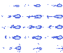

スプライトシートの再生
実行例
ソースコード
TypeScript
0.png / AnimInfo.ts / Anim.ts / app.ts
{kind=link}
解説/アルゴリズム
 再生するスプライト画像を用意します。
コード解説
export default class AnimInfo {
public name: string; // 呼び出す際の名前
public frames: number[]; // フレーム番号
public index: number; // frames[index]のフレームを表示している
public delay: number; // fps
public looped: boolean; // ループ再生するか？
constructor(
name: string,
frames: number[],
index: number,
delay: number,
looped: boolean
) {
this.name = name;
this.frames = frames;
this.index = index;
this.delay = delay;
this.looped = looped;
}
}
public update(anim: Anim, p: p5): void {
// フレーム番号を取り出す
const frame = anim.curAnimInfo.frames[anim.curAnimInfo.index];
// フレームの(x, y)位置に分解する
const tx = p.floor(frame % anim.chipXNum);
const ty = p.floor(frame / anim.chipXNum);
p.copy(anim.image, tx * anim.chipWidth, ty * anim.chipHeight, anim.chipWidth, anim.chipHeight, anim.x, anim.y, anim.chipWidth * anim.scale, anim.chipHeight * anim.scale);
if (anim.curAnimInfo && anim.curAnimInfo.delay > 0 && (anim.curAnimInfo.looped || !anim.finished)) {
// 時間を進める。60FPS固定の前提条件なので必要ならコードを変えたほうがよい
anim.time += 1 / 60;
// FPS調整
while (anim.time > anim.curAnimInfo.delay) {
anim.time -= anim.curAnimInfo.delay;
// インデックスの更新
if (anim.curAnimInfo.index >= anim.curAnimInfo.frames.length - 1) {
anim.finished = true;
if (anim.curAnimInfo.looped) {
anim.curAnimInfo.index = 0;
}
} else {
anim.curAnimInfo.index++;
}
}
}
}